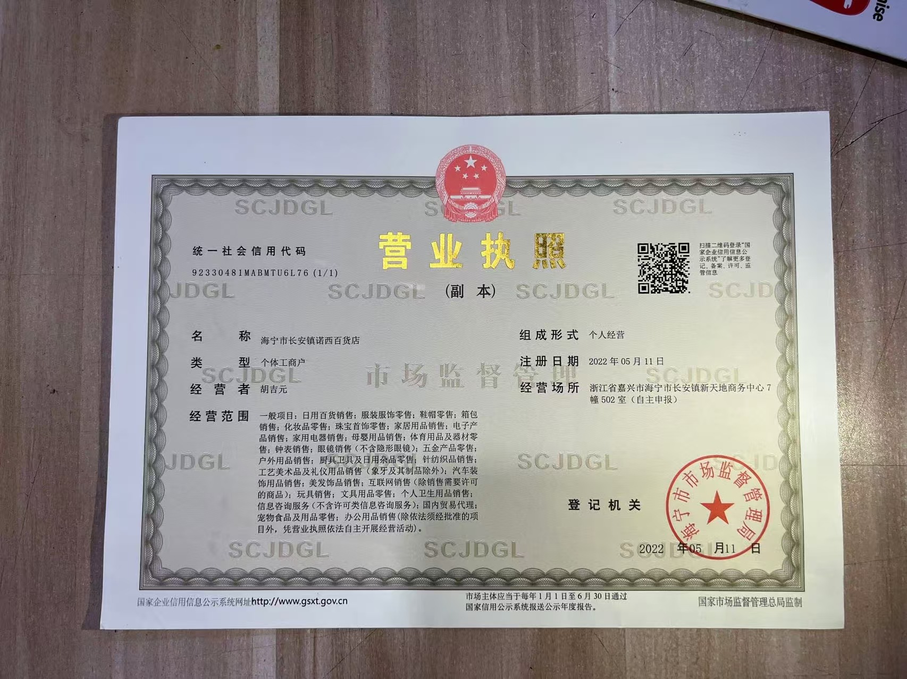
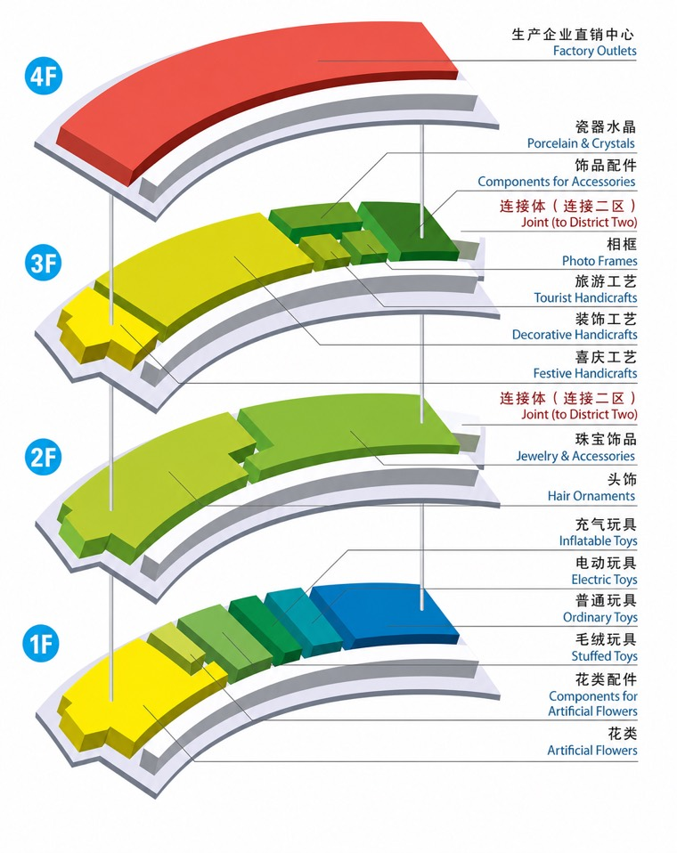
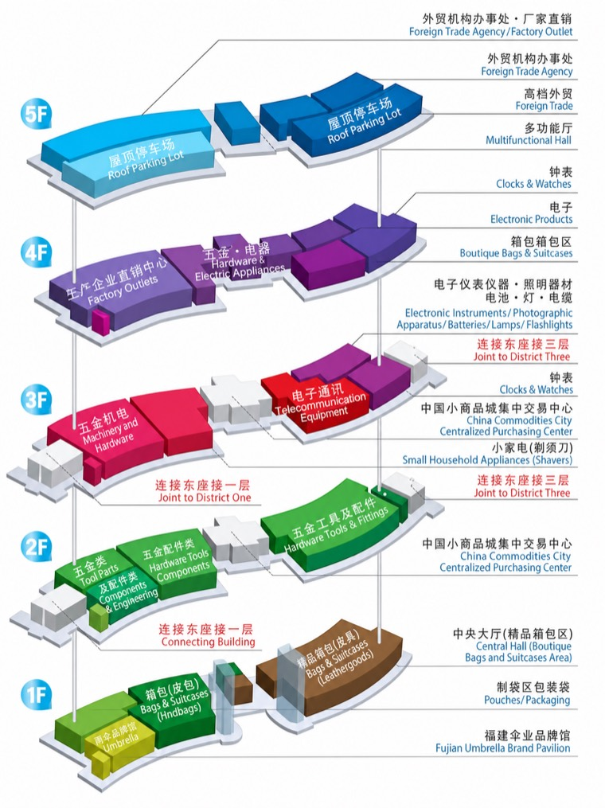
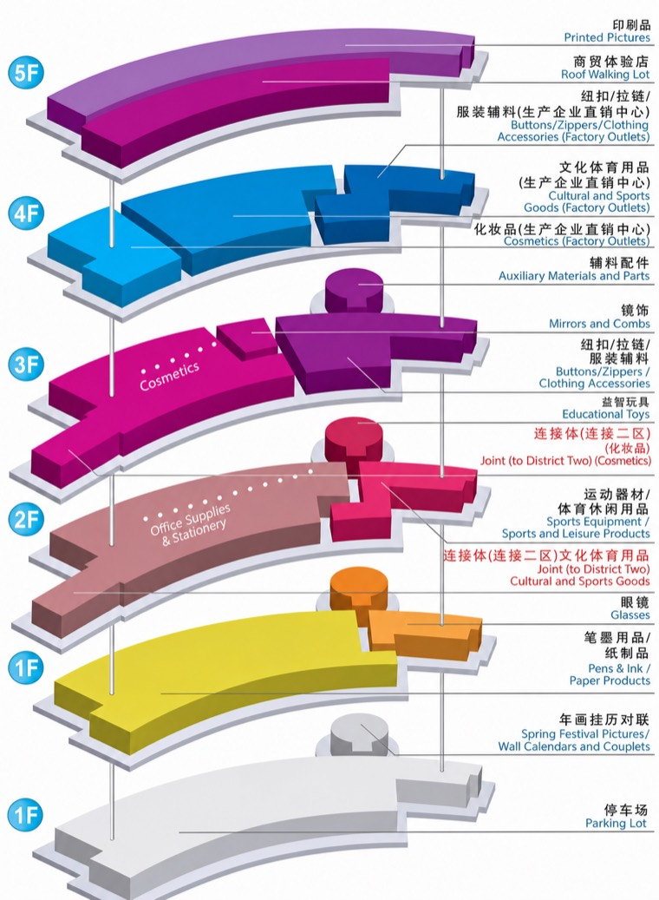

How do I verify a China supplier before payment?
Check identity, quotation consistency, samples, payment beneficiary, packaging notes, and pre-shipment evidence.
View supplier audit serviceYiwu sourcing agent for global buyers
Send a product link, photo or RFQ. Our Yiwu team compares suppliers, checks quality, consolidates orders and coordinates international shipping.
✓ Free Initial Sourcing Quote•✓ 2-Hour Business Reply•✓ 3%–5% Transparent Fee
Coming from ChatGPT or AI search?
YiwuBridge turns a complete sourcing brief into a supplier shortlist, MOQ notes, QC options, and shipping next steps. Initial RFQ replies are targeted within 2 business hours, with supplier checks and practical quotations normally prepared within 24 hours when supplier information is clear.
Send the product link, photo, target quantity, budget, and destination country so the comparison uses the same requirements for every supplier.
Read direct answers about YiwuBridge sourcing, QC, consolidation and fees.
High-intent sourcing questions
Most importers do not only search for a sourcing agent. They search for a specific risk: supplier trust, real cost, quality evidence, mixed-carton consolidation, or FBA delivery. These entry points connect each question to the right YiwuBridge guide or service page.
Check identity, quotation consistency, samples, payment beneficiary, packaging notes, and pre-shipment evidence.
View supplier audit serviceCompare transparent service fees with hidden markups, kickbacks, inflated freight, and unclear inspection charges.
Read procurement agent guideUse sample checks, quantity review, defect photos, carton marks, short videos, and balance-payment inspection notes.
View quality control serviceUse Yiwu warehouse consolidation to receive mixed suppliers, reduce wasted CBM, and ship one cleaner export order.
Read consolidation guidePrepare SKU labels, carton marks, packaging photos, pallet or parcel delivery, and fulfillment center shipping records.
View Amazon FBA prep serviceReview household goods, beauty, pet supplies, toys, packaging, gifts, accessories, tools, and private-label options.
Browse product categoriesBuilt around the Yiwu market
YiwuBridge gives importers, retailers, wholesalers, and e-commerce sellers a local team that can move from product discovery to shipment without losing control of cost, quality, or timing.
Product categories
From small commodities to private-label collections, we match your target price, quality level, packaging, and compliance requirements.
Send us your product photos, links, or specs. A sourcing specialist will reply with the next step.
About Us
YiwuBridge is built for overseas buyers who need a practical local team in Yiwu, not only online supplier links. We support supplier search, quotation comparison, samples, quality checks, warehouse consolidation, private-label packing, and export shipping coordination.

Local sourcing around Yiwu International Trade City and nearby supply hubs for low-MOQ and mixed-category buying.
Share your RFQ, product links, and target market. YiwuBridge prepares supplier shortlists, quote comparisons, and follow-up questions before you commit.
For confirmed orders, the team can coordinate carton marks, packing photos, inspection notes, and shipment preparation with the supplier or forwarder.

Business registration details can be shared with serious buyers during due diligence before confirmed orders.
Buyer solutions
Different buyers need different controls. We separate the workflow for Amazon sellers, wholesalers, retail chains, and first-time test orders so your inquiry goes to the right sourcing process.
Supplier matching, SKU labels, carton marks, barcode checks, product photos, and direct shipment to fulfillment centers.
Explore FBA prep supportCombine goods from several Yiwu and 1688 suppliers, reduce repeated freight costs, and simplify customs documents.
Track supplier lead times, packaging consistency, quantity checks, and replenishment planning for repeat purchase programs.
Start with market-ready stock, then add stickers, inserts, hang tags, color boxes, and product photos as the order grows.
How it works
A simple workflow for overseas buyers who need a local Yiwu agent to source, verify, inspect, consolidate, and ship products from China.
Share links, images, or specs of items from Yiwugo, 1688, Alibaba, or your target market.
We check the offline Yiwu market, compare supplier options, and quote you within 24 hours.
We collect samples, inspect quality, confirm packaging, and send you photos or videos.
We pack your mixed items into one shipment and coordinate export documents, customs, and delivery.
Representative sourcing cases
Practical project examples based on common buyer workflows. They show what evidence, controls, and export preparation an overseas buyer should expect before approving shipment.



Case 01 | Market sourcing
The buyer sent reference photos for home organizers, kitchen tools, and daily-use items. We checked Yiwu market booths, compared MOQs, and prepared a supplier shortlist with real product photos.

Case 02 | Warehouse packing
A wholesaler ordered from several Yiwugo and 1688 suppliers. We received the cartons in Yiwu, checked carton marks, photographed the goods, repacked weak boxes, and combined everything into one shipment.

Case 03 | E-commerce prep
For an online seller, we coordinated custom labels, thank-you cards, barcode stickers, carton marks, and final packing photos so the order could move directly to an overseas warehouse or Amazon FBA.

Case 04 | Quality control
For a repeat buyer, we checked packaging, carton count, visible defects, color consistency, and product details before the remaining payment was released to the supplier.

Case 05 | Private label
A small brand needed low-MOQ items to look consistent at retail. We coordinated stickers, inserts, package checks, and pre-shipment photos before the first launch order.
Trust and risk control
Large buyers need evidence, not only promises. These controls reduce supplier risk, unclear charges, wrong packaging, and shipment surprises.
We compare supplier options, MOQ, lead time, packaging, and RMB price notes so you can see why a supplier is recommended.
If visible defects or wrong packaging are found, we document the issue and request supplier correction, replacement, or rework before export.
We provide sample photos, carton photos, label photos, package checks, and short videos where needed before final release.
Support for T/T, local USD/EUR/GBP transfers via compliant providers, Alibaba Trade Assurance, and PayPal for small samples.
Legal disclaimer
This website is operated by an independent Yiwu purchasing service provider under the brand YiwuBridge. We have no official partnership, authorization, investment, or affiliation with Yiwugo.com and its operator Zhejiang Yiwugo E-Commerce Co., Ltd. The term "YIWUGO" is the registered trademark of its respective owner. Any mention of Yiwugo on this site is only a reference to a third-party marketplace and does not imply endorsement, agency relationship, or brand authorization. All services provided by us are independent third-party sourcing services.
Start sourcing
Share your product category, target market, budget, and timeline. We will prepare a practical sourcing plan.
Yiwu office location
Office address: No. 2, Building 22, Xingzhong Community, Chouzhou North Road, Choucheng Street, Yiwu City, Jinhua City, Zhejiang Province, China.
Popular buyer searches
If your traffic is coming from Google, ChatGPT, Perplexity, or direct visits, these focused guides help buyers quickly match their product category with the right supplier search, MOQ, QC, consolidation, and shipping workflow.
For fashion jewelry, hair clips, stainless steel jewelry, charm bracelets, waterproof jewelry, low-MOQ packaging, sample checks, and mixed-carton export orders.
For planters, garden tools, solar garden lights, patio items, outdoor decor, seasonal products, supplier comparison, carton checks, and warehouse consolidation.
For beauty tools, nail accessories, hair tools, cosmetic bags, private-label packaging, compliance screening, defect checks, and retail-ready sourcing.
For stainless steel tumblers, insulated water bottles, straw cups, logo drinkware, leak testing, food-contact material checks, packaging, and FBA prep.
For storage cabinets, vanity tables, office chairs, foldable furniture, flat-pack packaging, CBM control, pre-shipment inspection, and sea freight planning.
For buyers comparing a sourcing agent, freight forwarder, 1688 agent, Taobao agent, supplier audit, QC, payment risk control, and export shipping.
Latest sourcing guides
Start with a procurement brief, a mixed-supplier plan, or a RFQ-to-delivery checklist. Each guide leads to a clear next step before you pay, produce, or ship.
View all Blog / Sourcing Guide articlesYiwu market sourcing
Compare sourcing routes, fees, QC, warehouse consolidation and Amazon FBA preparation for a mixed product order.
Furniture procurement
Compare China furniture suppliers with a practical plan for materials, hardware, retail packing, carton volume, QC and export handoff.
General merchandise
Build a mixed household assortment with clearer SKU, MOQ, retail-pack, carton, QC and consolidation controls.
Beauty accessories
Source makeup tools, cosmetic bags, mirrors, hair and nail accessories with practical supplier, retail-pack and QC controls.
Household goods sourcing
Compare everyday household products with clearer MOQ, material, QC, carton and consolidation controls.
Furniture sourcing
Plan furniture materials, hardware, assembly, protective cartons and freight-ready measurements before you place a wholesale order.
Artificial flowers
Compare materials and MOQ, then protect realistic finish, colors and packaging through sample approval, QC and consolidation.
Multi-category sourcing
Coordinate mixed SKUs with supplier comparison, category-specific QC, warehouse consolidation and export planning.
Supplier quote brief
Send product links, quantity, target price, packaging, quality and destination in one brief, then compare supplier quotes on the same scope.
Mixed supplier orders
Manage Yiwu, 1688, Taobao and factory suppliers with one RFQ, sample, QC, consolidation and shipping workflow.
Procurement agent workflow
Prepare a buyer-ready RFQ, compare China suppliers, control samples, QC, warehouse consolidation, payment terms, and export shipping handoff.
FAQ
Learn how YiwuBridge supports global buyers who need a local China buying agent for supplier search, product sourcing, inspection, warehouse consolidation, and international shipping.
A Yiwu sourcing agent helps you find suppliers, compare quotations, negotiate details, check samples, inspect goods, consolidate orders, and arrange export shipping from China.
Send product links, photos or specifications with quantity, target price and destination. We compare suitable suppliers, confirm MOQ and packaging, coordinate samples and quality checks, then consolidate goods and support export shipping after you approve the order.
Yes. We can receive goods from multiple suppliers, check quantities, relabel or repack products, and consolidate them into one export shipment.
We source kitchenware, household goods, fashion accessories, toys, stationery, tools, lighting, packaging, home decor, baby products, pet supplies, seasonal gifts, and custom products.
We offer free sourcing and quotation. We only charge a 3% - 5% service fee based on your total order value when the shipment is confirmed. No hidden costs.
To ensure transactional security and minimize costs for our clients, we support Standard International Wire Transfers (T/T), Local Bank Transfers (USD/EUR/GBP via XTransfer/WorldFirst), and Alibaba Trade Assurance. For small sample payments under $500, PayPal is also accepted.
Yes! We are highly experienced with Amazon FBA standards. We provide free carton labeling, SKU barcoding, and direct pallet or parcel shipping to global fulfillment centers.
Yes. Send product photos, Yiwugo links, 1688 links, Alibaba links, specs, target price, quantity, destination country, and deadline. We will check supplier options and prepare a practical quotation.
Yes. Send us 1688, Taobao, Yiwugo, Weidian, Alibaba, or competitor product links. We compare online listings with offline Yiwu market suppliers and local factories, then report MOQ, lead time, packaging notes, and shipping options.
We check supplier identity, product category fit, quotation consistency, sample quality, payment beneficiary details, packaging requirements, and inspection evidence before recommending deposit or balance payment.
Yes. Many Yiwu categories support mixed trial orders. We help you test samples, packaging, QC standards, and real shipping cost before committing to a larger bulk order.
We separate product cost, service fee, inspection, local handling, and freight. Our usual service fee is 3% - 5% on confirmed shipments, with no hidden supplier kickbacks or inflated shipping markups.
Yes. Submit the RFQ form first, then email images, drawings, PDF lists, or specification files to hujiyuan0721@gmail.com. Include your name or WhatsApp number so we can match the files with your inquiry.
YiwuBridge can share business registration details during buyer due diligence before confirmed orders.